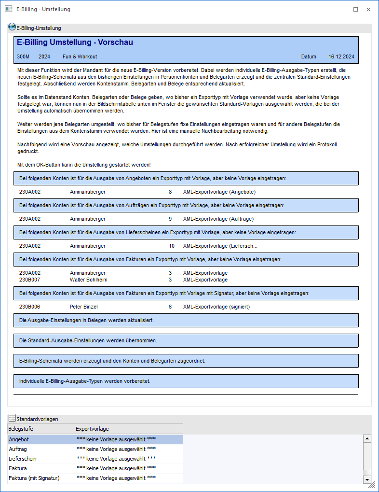
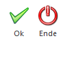
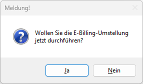
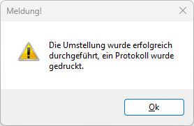
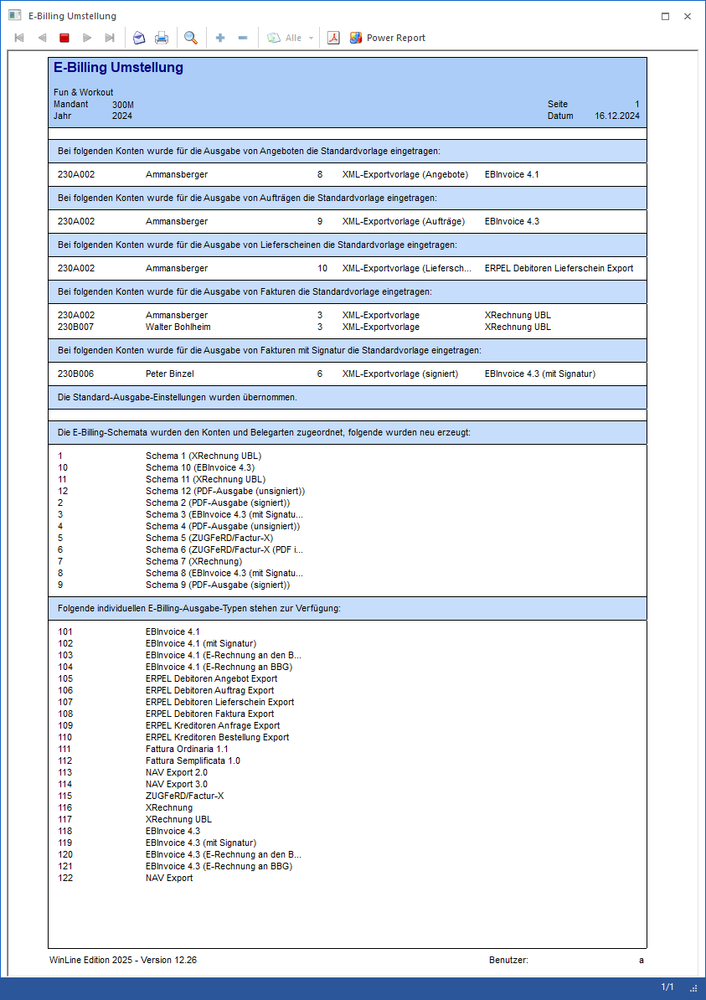
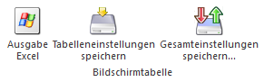

Ab der WinLine Edition 2025 Version 12.26 werden für den elektronischen Versand von Rechnungen E-Billing - Schemata verwendet, wo alle Einstellungen gesammelt vorgenommen und verwaltet werden können.
Damit die diversen Einstellungen nicht manuell in Schemata übernommen werden müssen, wird beim erstmaligen Aufruf einer der folgenden Menüpunkte die E-Billing - Umstellung gestartet:
ü XML-Vorlagen
ü E-Billing - Schemata
ü E-Rechnung Eingang
ü XML-Import
ü E-Billing Export
Hinweis
Die Umstellung muss in jedem Mandanten und Wirtschaftsjahr durchgeführt werden, in dem das E-Billing verwendet werden soll.

Im oberen Bereich des Fensters wird die Funktion der Umstellung erklärt.
Bis zur WinLine Edition 2025 Version 12.25 konnten in den "e-Billing Export"-Einstellungen ein Exporttyp mit einer Exportvorlage ausgewählt werden. Dabei konnte bereits in der Einstellung eine Vorlage gewählt werden, mit der der Export durchgeführt werden soll. Alternativ konnte das Feld aber auch leer bleiben, um dann beim Export selbst die Vorlage zu definieren.
Diese Funktionsweise wird jetzt nicht mehr unterstützt, d.h. im Zuge der Umstellung muss nun eine Vorlage angegeben, oder die Einstellung zurückgesetzt werden.
In der Ansicht werden auch noch die Konten angezeigt, wo diese Einstellung zutrifft.
Darüber hinaus werden die weiteren Aktionen angezeigt, die im Zuge der Umstellung durchgeführt werden.
Standardvorlagen
In der Tabelle werden nun die Belegstufen gemäß Liste angezeigt, wo keine Zuordnung getroffen wurde. In der Spalte
Ø Exportvorlage
kann nun die Vorlage hinterlegt werden, die zukünftig verwendet werden soll, dabei werden immer nur die Vorlagen passend zum Typ (signiert / unsigniert) angezeigt. Mit der Auswahl " *** keine E-Billing-Ausgabe ***" wird die Einstellung im Zuge der Umstellung zurückgesetzt.
Buttons

Ø Ok
Durch Anwahl des Buttons "Ok" bzw. der Taste F5 wird die Umstellung durchgeführt. Dabei muss die Umstellung zuerst bestätigt werden:

Durch Bestätigung der Meldung mit JA werden folgende Aktionen ausgeführt:
ü Für Exportvorlagen werden individuellen Exporttypennummern (> 100) vergeben (in der System-Tabelle, daher nur beim ersten Mandanten/Stammdatenjahr)
ü Es wird das Standard-Schema erzeugt, dabei werden die E-Billing-Einstellungen übernommen (speziell für den Mailversand). Die Einstellungen für die einzelnen Exporttypen können nicht übernommen werden, da diese bisher benutzerabhängig gespeichert waren.
ü Die Standardvorlagen werden in die betroffenen Personenkonten und Belegarten übernommen.
ü Es wird geprüft, ob es Belegarten gibt, wo für Belegstufen eine E-Billing-Ausgabe oder "keine Ausgabe" ausgewählt war und für andere Belegstufen die Übernahme aus dem Kontenstamm. Dies ist so nicht mehr zulässig und wird daher umgestellt, d.h. alle "Übernahme aus dem Kontenstamm" werden auf "keine Ausgabe" umgestellt, in der Vorschau und im Protokoll wird entsprechend darauf hingewiesen, dass diese Belegarten überarbeitet werden müssen. Wenn in allen Belegstufen "Übernahme aus dem Konto" oder "keine Ausgabe" ausgewählt ist, so wird dies so auch in die Schema-Selektion übernommen.
ü Danach werden für alle Kombinationen der vier Exporttypen und der dazugehörigen Vorlagen aus den Konten und Belegarten Schemata erzeugt (die so erzeugten Vorlagen bekommen eine Vorlagennummer > 100) und in die Konten und Belegarten eingetragen. Als Bezeichnung wird die Schemanummer und der Exporttyp der höchsten Belegstufe verwendet, diese kann aber nachträglich editiert werden. Für alle diese Schemata werden keine individuellen Ausgabe- oder Mail-Einstellungen eingerichtet, es werden also jeweils die Standard-Einstellungen verwendet.
ü Zuletzt wird in jene Belege, für die die E-Billing-Ausgabe zum Zeitpunkt der Umstellung offen ist, das Schema aus dem Konto bzw. der Belegart übernommen. Wenn sich daraus eine Änderung für die E-Billing-Ausgabe ergibt, wird dies am Protokoll ausgewiesen.
Die Fertigstellung der Umstellung wird wieder mit einer Meldung angezeigt:

Das Umstellungsprotokoll wird in den Spooler gedruckt und könnte so aussehen:

Ø Ende
Durch Drücken des Buttons "Ende" bzw. der Taste ESC wird das Fenster geschlossen, die Umstellung wird nicht durchgeführt.
Tabellenbuttons

Ø Ausgabe Excel
Durch Anwahl des Buttons "Ausgabe Excel" wird der Inhalt der Tabelle an Microsoft Excel übergeben.
Ø Tabelleneinstellungen speichern
Die Spalten einer Tabelle können grundsätzlich an beliebige Positionen verschoben, bzw. in der Breite entsprechend angepasst werden. Durch Anwahl des Buttons "Tabelleneinstellungen speichern" werden die Einstellungen benutzerspezifisch gespeichert und bei dem nächsten Aufruf des Programmpunktes wieder vorgeschlagen.
Ø Gesamteinstellungen speichern
Im Gegensatz zu "Tabelleneinstellungen speichern" können mit "Gesamteinstellungen speichern" mehrere Tabellenaufbauten gespeichert und nach Wunsch geladen werden. Zusätzlich werden Sonderfunktionen der Tabelle (z.B. "Spalte gruppieren") ebenfalls bei der Speicherung bedacht.